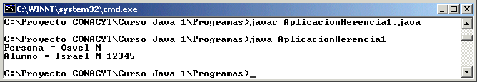
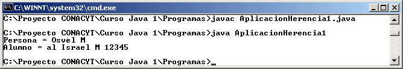
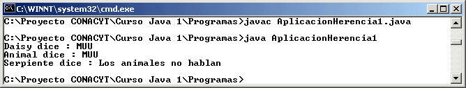
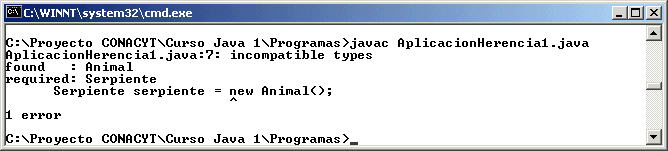
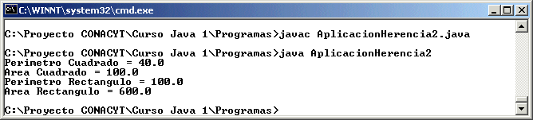

Módulo 5: Clases
y Objetos 
3. Herencia
Herencia
Al definir una clase, se definen las características o variables y los métodos y conductas que pueden poseer todos los objetos que sean creados a partir de la clase.
Sin embargo existen clases que requieren de una definición más especializada, para poder definir atributos o variables y conductas o métodos que son específicos de los objetos de esas clases más especializadas.
Un ejemplo puede ser la clase
Persona, esta clase puede tener solamente el nombre de la persona y posiblemente el sexo, con sus respectivos constructores y métodos de acceso y modificación de las variables de instancia, la siguiente pudiera ser una definición de esta clase:public class Persona {
private String nombre;
private char sexo;
public Persona() {
nombre = new String();
sexo = ' ';
}
public String getNombre() {
return nombre;
}
public void setNombre(String nombre) {
this.nombre = nombre;
}
public char getSexo() {
return sexo;
}
public void setSexo(char sexo) {
this.sexo = sexo;
}
public String toString() {
return "" + nombre + " " + sexo;
}
}
Supongamos que queremos definir la clase Alumno, en la cual obviamente tendremos que definir el nombre y sexo del alumno. Cuando realizamos esto no debemos empezar desde cero, podemos decir que la clase Alumno sería una clase que hereda de la clase Persona. Solamente que la clase Alumno ahora añadirá ciertos atributos que sean solo específicos de la clase Alumno y a su vez, añadiremos los métodos especificos de la clase Alumno, tendriamos lo siguiente:
public class Alumno extends Persona {
private int matricula;
public Alumno() {
super();
matricula = 0;
}
public int getMatricula() {
return matricula;
}
public void setMatricula(int matricula) {
this.matricula = matricula;
}
public String toString() {
return "" + super.toString() + " " + matricula;
}
}
Podemos observar en esta clase Hija (clase que hereda), que en el constructor se utiliza el método super(), pero en ninguna parte está definido este método, la palabra super() es utilizada para llamar al constructor vacío de la clase Padre (clase de la cual se está heredando).
La palabra extends nos permite dentro de Java definir la herencia, entonces cuando decimos public class Alumno extends Persona, estamos diciendo que la clase Alumno hereda de la clase Persona. Una aplicación que utiliza estas clases sería la siguiente:
import java.io.*;
public class AplicacionHerencia1 {
public static void main(String[] args) {
Persona osvel = new Persona();
osvel.setNombre("Osvel");
osvel.setSexo('M');
System.out.println("Persona = " + osvel.toString());
Alumno israel = new Alumno();
israel.setNombre("Israel");
israel.setSexo('M');
israel.setMatricula(12345);
System.out.println("Alumno = " + israel.toString());
}
}
La cual muestra lo siguiente en ejecución:

De esta manera podemos observar como la clase Alumno está heredando de la clase Persona y todos los atributos y métodos de la Persona, están siendo utilizados por el Alumno, ya que automáticamente son de el al heredarlos.
Cuando utilizamos clases y sabemos que vamos a utilizar la herencia, es entonces que utilizamos la palabra protected en lugar de private. protected es utilizada para definir que la variable o método donde es usada, será privada para cualquier clase externa, pero será utilizada como si fuera pública para cualquier clase hija.
De esta manera la mejor manera de utilizar las clases anteriores serian:
Clase Persona:
public class Persona {
protected String nombre;
protected char sexo;
public Persona() {
nombre = new String();
sexo = ' ';
}
public String getNombre() {
return nombre;
}
public void setNombre(String nombre) {
this.nombre = nombre;
}
public char getSexo() {
return sexo;
}
public void setSexo(char sexo) {
this.sexo = sexo;
}
public String toString() {
return "" + nombre + " " + sexo;
}
}
Clase Alumno:
public class Alumno extends Persona {
protected int matricula;
public Alumno() {
super();
matricula = 0;
}
public int getMatricula() {
return matricula;
}
public void setMatricula(int matricula) {
this.matricula = matricula;
}
public String toString() {
return "" + super.toString() + " " + matricula;
}
}
Sobreescritura de Métodos
Una clase puede definir la manera en la que se hará un específico comportamiento para todos los objetos de la clase que le componen. Cuando una clase Hija quiere cambiar el comportamiento de la manera en la que está definida en la clase Padre, lo puede hacer solamente volviendo a definir el método (comportamiento) dentro de la clase que hereda, a este concepto se le denomina Sobreescritura de un Método.
En el ejemplo anterior supongamos que en la clase Alumno se desea modificar la manera en la que se cambia el nombre, de manera que al cambiar el nombre al alumno se le anteponga las letras "al ", entonces la clase Alumno quedaría de la siguiente manera:
public class Alumno extends Persona {
protected int matricula;
public Alumno() {
super();
matricula = 0;
}
public int getMatricula() {
return matricula;
}
public void setMatricula(int matricula) {
this.matricula = matricula;
}
public void setNombre(String nombre) {
this.nombre = "al " + nombre;
}
public String toString() {
return "" + super.toString() + " " + matricula;
}
}
La ejecucion quedaria:

Polimorfismo
Se le llama polimorfismo al tener la llamada a un método por diferentes objetos, esto significa que si por ejemplo tenemos el método crecer() para una clase Animal, tambien tendremos el método crecer() para una clase Persona, lo mismo para una clase Bacteria, esto quiere decir que la misma conducta puede ser desarrollada por diferentes objetos de diferentes clases. Java sabe a cual método tomar de acuerdo a la declaración del objeto de la clase que esta haciendo la llamada al método.
El polimorfismo tambien actúa por tener un objeto definido como un tipo de clase y creado como un objeto de la clase hija. Por ejemplo supongamos que tenemos la clase Animal y algunas clases hijas que heredan de esta clase como: Vaca, Cerdo y Serpiente, con la siguiente definición:
Clase Animal
public class Animal {
private int peso = 0;
public void cambiaPeso(int peso) {
this.peso = peso;
}
public int obtenPeso() {
return peso;
}
public String habla() {
return "Los animales no hablan";
}
}
Clase Vaca
public class Vaca extends Animal {
public String habla() {
return "MUU";
}
}
Clase Cerdo
public class Cerdo extends Animal {
public String habla() {
return "OINC";
}
}
Clase Serpiente
public class Serpiente extends Animal {
}
Aplicación Herencia con Polimorfismo
import java.io.*;
public class AplicacionHerencia1 {
public static void main(String[] args) {
Vaca daisy = new Vaca();
Animal animal = new Vaca();
Serpiente serpiente = new Serpiente();
System.out.println("Daisy dice : " + daisy.habla() );
System.out.println("Animal dice : " + animal.habla() );
System.out.println("Serpiente dice : " + serpiente.habla() );
}
}
La ejecución de esta aplicación muestra lo siguiente:

En esta aplicación observamos como vaca pertenece a la clase Vaca y el método habla() dice MUU como correspondería a una vaca, luego animal es un objeto de la clase Animal (clase Padre) y al ser creado como Vaca y llamar al método habla() vemos como aunque la clase Animal tiene en el método habla() el decir "Los animales no hablan", dice "MUU" porque fue creado como un objeto de la clase Vaca. Vemos también como el objeto serpiente que es creado como objeto de la clase Serpiente al usar el método habla() dice "Los animales no hablan", ya que no reescribe el método habla() y así es como esta definido en la clase Animal.
Al utilizar la herencia debemos tener cuidado cuando creamos los objetos con diferentes clases que la que definimos el objeto, por ejemplo si definimos el objeto serpiente como tipo Serpiente, pero lo creamos con el constructor de Animal() nos dará el siguiente error:

Entonces debemos entender que un objeto padre puede ser creado con un constructor del hijo, pero no se puede hacer lo contrario.
Clases Abstractas
Existen algunas clases que no pueden definir todos los detalles de los comportamientos de todos los objetos que conforman la clase, pero si pueden saber que existe el comportamiento, entonces estas clases se definen como abstractas, ya que los métodos que definen esas conductas serán definidos como abstractos con la palabra abstract.
Una aplicación no puede crear instancias (objetos) de una clase que esta definida como abstracta.
Cuando se tiene una clase abstracta se espera que haya al menos una clase que herede de esta clase abstracta y defina todos los métodos necesarios para la clase.
Por ejemplo la clase Figura, que define los métodos perímetro y área como abstractos, entonces podemos tener la clase Cuadrado y la clase Rectangulo que hereden de esta clase Figura pero que definan ambos métodos. Veamos las clases implicadas en este ejemplo:
Clase Figura
public abstract class Figura{
protected int x, y, ancho, alto;
public void cambiaX(int x) {
this.x = x;
}
public void cambiaY(int y) {
this.y = y;
}
public void cambiaAncho(int ancho) {
this.ancho = ancho;
}
public void cambiaAlto(int alto) {
this.alto = alto;
}
public abstract float obtenPerimetro();
public abstract float obtenArea();
}
Clase Cuadrado
public class Cuadrado extends Figura {
public float obtenPerimetro() {
return 4 * ancho;
}
public float obtenArea() {
return ancho * ancho;
}
}
Clase Rectangulo
public class Rectangulo extends Figura {
public float obtenPerimetro() {
return 2 * ancho + 2 * alto;
}
public float obtenArea() {
return ancho * alto;
}
}
Aplicacion Herencia 2
public class AplicacionHerencia2 {
public static void main(String[] args) {
Cuadrado c = new Cuadrado();
c.cambiaAncho(10);
c.cambiaAlto(10);
Rectangulo r = new Rectangulo();
r.cambiaAncho(20);
r.cambiaAlto(30);
System.out.println("Perimetro Cuadrado = " + c.obtenPerimetro());
System.out.println("Area Cuadrado = " + c.obtenArea());
System.out.println("Perimetro Rectangulo = " + r.obtenPerimetro());
System.out.println("Area Rectangulo = " + r.obtenArea());
}
}
La ejecucion de esta aplicación muestra lo siguiente:

De esta manera observamos como al definir ambos métodos en la clase Particular esta quita la abstracción.
http://java.sun.com/docs/books/tutorial/java/concepts/inheritance.html